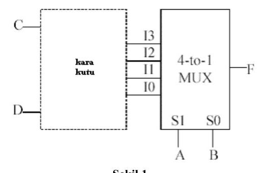
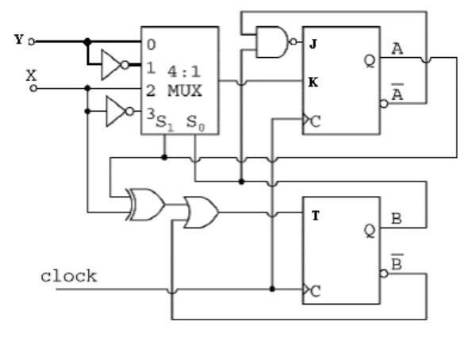
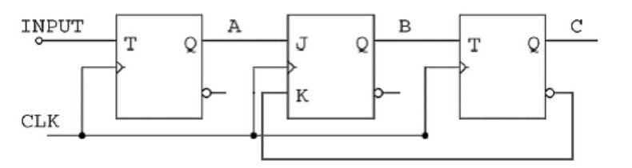

· EEM211
EEM211 Sayısal Mantık Tasarımı: BİL275 Sayısal Mantık Tasarımı Final Sınavı (Başkent Üniversitesi Bilgisayar Mühendisliği, Ocak 2004)
EEM211 – Sayısal Mantık Tasarımı · 28.01.2004 · 16.10.2026
Bu yazı, EEM211 Sayısal Mantık Tasarımı dersinin örnek sorular klasöründe bulunan bir final sınavıdır: Başkent Üniversitesi Bilgisayar Mühendisliği Bölümü BİL275 Sayısal Mantık Tasarımı dersinin final sınavı (PDF'in oluşturulma tarihi 28 Ocak 2004; sınav süresi 150 dakika). Aynı üniversitenin bilgisayar mühendisliği bölümünde verilen bu ders, içerik olarak EEM211'in karşılığı. Belgede yalnızca sorular var, cevaplar yok. Sorular aşağıda metin olarak, şekiller görsel olarak verildi; orijinal PDF yazının sonunda indirilebilir.
Bu içerik üçüncü taraf bir kaynağa aittir; arşiv ve nostalji amacıyla kaynak belirtilerek paylaşılmıştır. Hak sahibinin talebi hâlinde kaldırılır.
Puan dağılımı
| Soru | 1 | 2 | 3 (lab) | 4 | 5 | Toplam |
|---|---|---|---|---|---|---|
| Puan | 25 | 30 | 10 | 25 | 20 | 100 |
Soru 1 (25 puan)
Bir girişi ve bir çıkışı olan sıralı bir devre, giriş dizisinde 1101 veya 1001 olduğunda çıkışı 1 yapmaktadır. Bu sıralı devreyi D flip-floplarıyla tasarlayınız. 001101101100101101001101 dizisi için çıkış dizisini gösteriniz.
Soru 2 (30 puan)
a) 3 bitlik girişler için aşağıdaki işlemi gerçekleştiren devreyi minimum sayıda 2x4 kod çözücü (decoder) ve minimum sayıda 4'e 2 kodlayıcı (encoder) kullanarak tasarlayınız (kapı kullanmayınız). [10]
İşlem: çıkış = mod((giriş · 3), 8)
Örneğin 6 (110) girişi için çıkış = mod(6 · 3, 8) = mod(18, 8) = 2 (010) olmalıdır.
b) a'da verilen işlemi minimum sayıda 2x1 MUX kullanarak tasarlayınız (kapı kullanmayınız). [10]
c) Aşağıdaki kara kutuyu F(A, B, C, D) = Σ(0, 7, 8, 9, 10, 11, 12, 14, 15) fonksiyonunu gerçekleştirecek şekilde tasarlayınız. [10]

Soru 3 (10 puan, laboratuvar final sorusu)
Girişi 1 olduğunda 0, 4, 5, 7, 6, 2, 3, 1, 0, 4, … şeklinde; girişi 0 olduğunda 0, 1, 3, 2, 6, 7, 5, 4, 0, 1, … şeklinde sayan devreyi T flip-floplarıyla tasarlayınız. Durum diyagramını çiziniz. Devrenin işlevini belirtiniz.
Soru 4 (25 puan)
0, 1, 3, 6, 7, 4, 0, 1, 3, … şeklinde sayan bir sayıcı için:
a) Durum tablosunu ve durum diyagramını çiziniz. [5]
b) Sayıcıyı J-K flip-floplarıyla tasarlayınız. Kullanılmayan durumların analizini yapınız (devre çizimi yapmayınız). [10]
c) b'de tasarladığınız devreye minimum sayıda adres girişi olan bir ROM ekleyerek 7, 0, 3, 4, 6, 7, 7, 0, 3, 4, 6, 7, 7, 0, 3, … sırasında sayan bir sayıcı tasarlayınız. [10]
Soru 5 (20 puan)
a) Aşağıdaki devreyi (Şekil 2) analiz ediniz. Durum tablosunu ve durum diyagramını çiziniz. [12] (Bu soruda kısmi puanlama yapılmayacaktır.)

b) i) Aşağıdaki devrenin (Şekil 3) 01101110 giriş dizisi için vereceği çıkış dizisini belirtiniz (başlangıçta flip-flopların Reset durumunda olduğunu kabul ediniz). ii) C çıkışı A flip-flopunun girişine bağlanırsa sayma sırası nasıl olur? (Mümkün olabilecek tüm sayma sıralarını bulunuz.) [8] (Bu soruda kısmi puanlama yapılmayacaktır.)

Sınav kâğıdındaki flip-flop uyarma tabloları
| Q(t) | Q(t+1) | J | K | D | T | S | R |
|---|---|---|---|---|---|---|---|
| 0 | 0 | 0 | X | 0 | 0 | 0 | X |
| 0 | 1 | 1 | X | 1 | 1 | 1 | 0 |
| 1 | 0 | X | 1 | 0 | 1 | 0 | 1 |
| 1 | 1 | X | 0 | 1 | 0 | X | 0 |